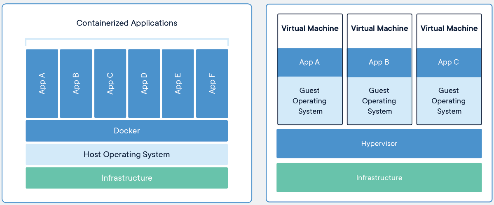
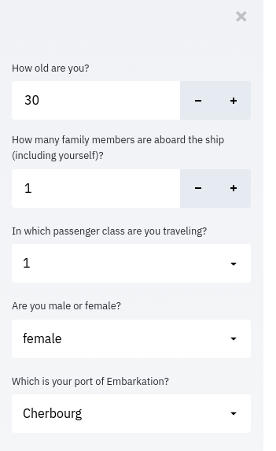
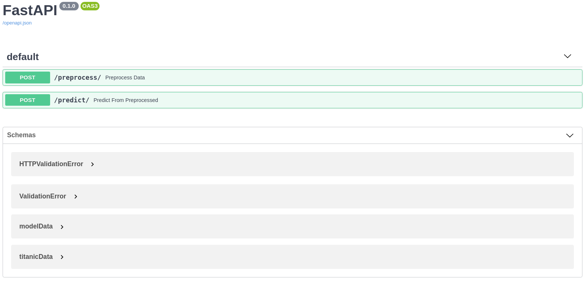
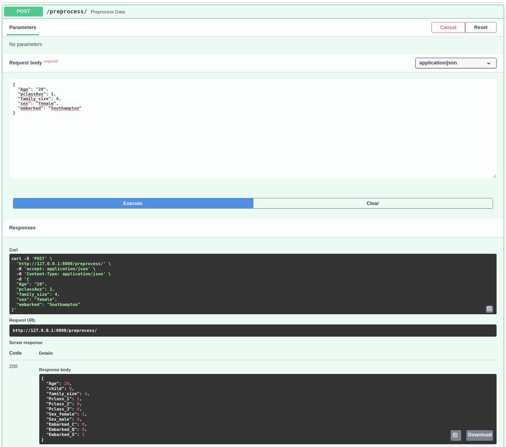
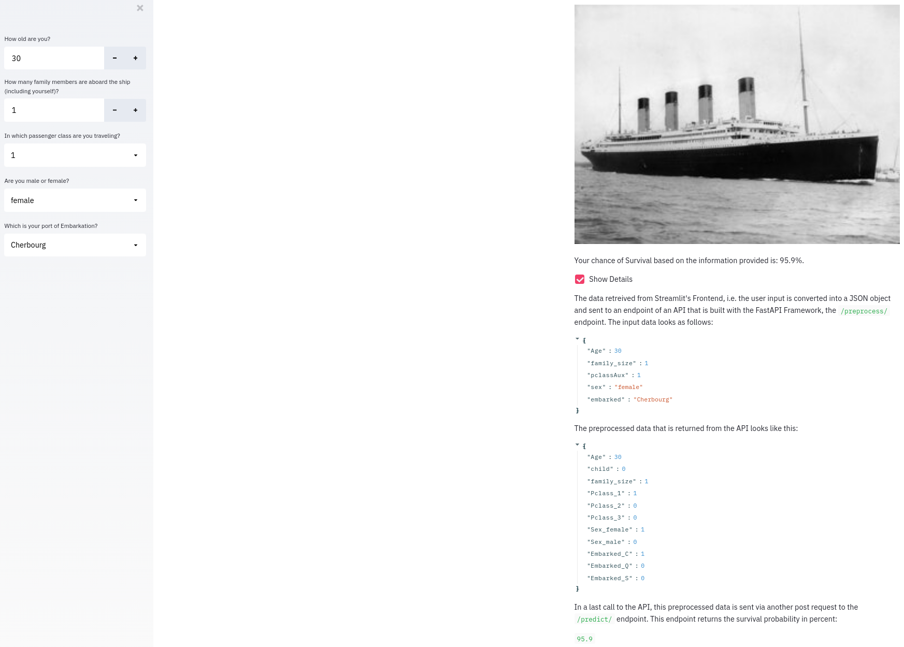
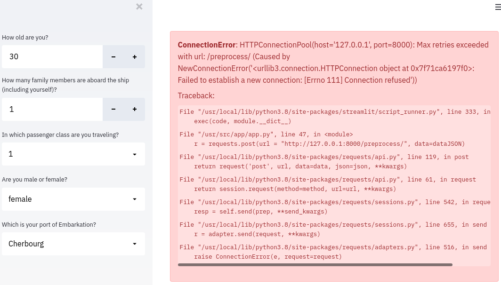
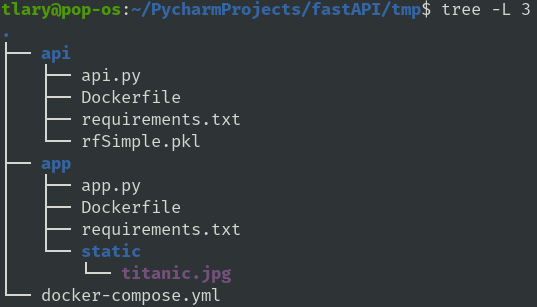

Serving ML Models as Microservices with FastAPI, Docker, and Docker-Compose
Mon, Mar 22, 2021
15-minute read
In two previous blogposts I already wrote about model deployment, once with Flask and Heroku, and once via Streamlit Sharing. However, in this post I am going to demonstrate another way to deploy Machine Learning models to production: deploying them in a docker container and serving them as microservices.
In the following case, I will use a simple Random Forest model that predicts if passengers would have survived the Titanic disaster taken from this post.
1. Brief Introduction to Microservice Architecture and Docker
In microservice architecture, software is divided into many small microservices that are independent of each other instead of developing the whole project in a single monolithic architecture. Using such an architecture for projects or software has the advantage that every microservice can be maintained, expanded, and also deployed separately. This way, software can easily be optimized or changed without the risk of crashing the entire application, hence allowing to run CI/CD workflows and allowing for frequent software updates and optimizations. It also facilitates ownership of the single microservices and allows to scale each service separately from the other services which eventually saves resources and money.
One concept that is closely connected and often mentioned when talking about microservices is containerization. Containers are used to package applications or software together with all the dependencies in isolated environments. These containers can then be run on any system or server since they contain everything needed to actually execute the application. Containers are somewhat similar to virtual machines (VM), however have the advantage that they require much less overhead and are more lightweight compared to VMs since they do not provide hardware virtualization. The most common and well-known solution for containerization is called Docker. Docker facilitates the use of containers in software development by making it easy to build and run applications in containers by providing an additional layer of abstraction to containers.

To define containers, Docker uses so-called Dockerfiles. From these Dockerfiles, images can be built, which are basically blueprints for the containers. The image is all that is needed to create and run the container, assuming Docker is already installed on the system in which the container should be run. Docker even provides a repository from which images can be pulled and run, called Docker Hub.
2. Architecture of the Webapp
In the following I will demonstrate how to deploy a small ML webapp. The whole functionality is divided into a frontend and a backend part, both will be containerized with Docker. The containers will be able to communicate via an API: the frontend sends requests to the backend container and receives predictions made by the model in the backend container.
For the frontend I will use Streamlit to get a visually appealing example without the need to write HTML and CSS, for the backend I will use the FastAPI package. Both parts will be containerized using Docker. Another tool, Docker-compose, will be used to run both containers on the same network, so they can communicate despite being isolated environments.
3. Backend Functionality - FastAPI
The first step of this project (after training the model that is used here), is to build the backend for the application. As stated earlier, our goal is to serve the Titanic prediction model via an API. To build this API, I use the FastAPI package. FastAPI is a framework to write APIs in Python and is often used as an alternative to the Flask package. To keep things simple, I will only define two endpoints for the API here: one to create the input data that is passed to the model from the information which is declared in the frontend by the user; and another endpoint which returns the prediction based on the input data.
To create an API, the first step is to create an object from the FastAPI class. Using this object, the endpoints can then be defined. For example, creating an endpoint that handles get requests to the path “/home” and returns a key:value pair of “message”:“hello world” would look like the following:
api = FastAPI()
@api.get("/home"):
return {"message":"hello world"}
As stated above, our API should provide two endpoints: one for data preprocessing and one for prediction. As before, the frontend will collect information on the following criteria: age, passenger class, family size, sex, and starting port.

This information is then processed and used to get the data into the format that is needed to be forwarded to the model to get predictions. Since the request made to the endpoint needs to contain data, I use the post method here:
# define post method to preprocess data
# using the previously defined Pydantic class as request body
@api.post("/preprocess/")
def preprocess_data(data: titanicData):
# child indicator
child = int(data.Age <= 16)
# passenger class
Pclass_1=0
Pclass_2=0
Pclass_3=0
if data.pclassAux==1:
Pclass_1=1
if data.pclassAux==2:
Pclass_2=1
if data.pclassAux==3:
Pclass_3=1
# male/female indicators
Sex_female = 0
Sex_male = 0
if data.sex=="female":
Sex_female=1
else:
Sex_male=1
# embarked indicators
Embarked_S = 0
Embarked_Q = 0
Embarked_C = 0
if data.embarked=="Cherbourg":
Embarked_C = 1
if data.embarked=="Queenstown":
Embarked_Q = 1
if data.embarked=="Southampton":
Embarked_S = 1
# store preprocessed data / model input as dictionary
processed = {"Age": data.Age,
"child": child,
"family_size": data.family_size,
"Pclass_1": Pclass_1,
"Pclass_2": Pclass_2,
"Pclass_3": Pclass_3,
"Sex_female": Sex_female,
"Sex_male": Sex_male,
"Embarked_C": Embarked_C,
"Embarked_Q": Embarked_Q,
"Embarked_S": Embarked_S}
# return preprocessed data
return processed
The second endpoint should receive the data together with the request and return the predicted probability of survival. To do so, the model is loaded, the request body is used as input to the model, and the class probability of survival is returned from the API:
# define post method to get prediction from model
@api.post("/predict/")
def predict_from_preprocessed(data: modelData):
# get data from request body
inputData = data.dict()
# convert to pd DF since sklearn cannot predict from dict
inputDF = pd.DataFrame(inputData, index=[0])
# load the Random Forest Classifier
with open("./rfSimple.pkl", 'rb') as file:
f = pickle.load(file)
# make predictions
SurvivalProba = rf.predict_proba(inputDF)[0,1]
survPerc = round(SurvivalProba*100, 1)
return survPerc
Another advantage of FastAPI is that it uses Pydantic to declare request bodies. Pydantic guarantees that the sent data is automatically converted into the correct data types. To make use of this feature, I declare a data model as a class that inherits from Pydantic’s BaseModel class. These data models are then used as arguments in the defined functionality for the respective endpoints.
# using Pydantic models to declare request body
# base data as derived from Streamlit frontend
class titanicData(BaseModel):
Age: int
pclassAux: int
family_size: int
sex: str
embarked: str
# preprocessed data as returned from API
class modelData(BaseModel):
Age: int
child: int
family_size: int
Pclass_1: int
Pclass_2: int
Pclass_3: int
Sex_female: int
Sex_male: int
Embarked_C: int
Embarked_Q: int
Embarked_S: int
After putting all the above things together, the script eventually looks like the following:
from fastapi import FastAPI # import FastAPI class
from pydantic import BaseModel
import numpy as np
import pandas as pd
import pickle
from sklearn.ensemble import RandomForestClassifier
api = FastAPI()
# using Pydantic models to declare request body
# base data as derived from Streamlit Frontend
class titanicData(BaseModel):
Age: int
pclassAux: int
family_size: int
sex: str
embarked: str
# preprocessed data as returned from API
class modelData(BaseModel):
Age: int
child: int
family_size: int
Pclass_1: int
Pclass_2: int
Pclass_3: int
Sex_female: int
Sex_male: int
Embarked_C: int
Embarked_Q: int
Embarked_S: int
# define post method to preprocess data
# using the previously defined Pydantic class as request body
@api.post("/preprocess/")
def preprocess_data(data: titanicData):
# child indicator
child = int(data.Age <= 16)
# passenger class
Pclass_1=0
Pclass_2=0
Pclass_3=0
if data.pclassAux==1:
Pclass_1=1
if data.pclassAux==2:
Pclass_2=1
if data.pclassAux==3:
Pclass_3=1
# male/female indicators
Sex_female = 0
Sex_male = 0
if data.sex=="female":
Sex_female=1
else:
Sex_male=1
# embarked indicators
Embarked_S = 0
Embarked_Q = 0
Embarked_C = 0
if data.embarked=="Cherbourg":
Embarked_C = 1
if data.embarked=="Queenstown":
Embarked_Q = 1
if data.embarked=="Southampton":
Embarked_S = 1
# store preprocessed data / model input as dictionary
processed = {"Age": data.Age,
"child": child,
"family_size": data.family_size,
"Pclass_1": Pclass_1,
"Pclass_2": Pclass_2,
"Pclass_3": Pclass_3,
"Sex_female": Sex_female,
"Sex_male": Sex_male,
"Embarked_C": Embarked_C,
"Embarked_Q": Embarked_Q,
"Embarked_S": Embarked_S}
# return preprocessed data
return processed
# define post method to get prediction from model
@api.post("/predict/")
def predict_from_preprocessed(data: modelData):
# get data from request body
inputData = data.dict()
# convert to pd DF since sklearn cannot predict from dict
inputDF = pd.DataFrame(inputData, index=[0])
# load the Random Forest Classifier
with open("./rfSimple.pkl", 'rb') as file:
rf = pickle.load(file)
# make predictions
SurvivalProba = rf.predict_proba(inputDF)[0,1]
survPerc = round(SurvivalProba*100, 1)
return survPerc
The command to run the API is uvicorn <filename>:<FastAPIname>, so in this case using uvicorn api:api makes the API available on http://127.0.0.1:8000, since both the .py file and the object from the FastAPI class are named api.
Another very convenient feature of FastAPI is that it comes with automatic documentation. For example, the endpoint /docs provides automatically generated documentation via the Swagger UI.

This makes it possible to test the API directly from the browser without the need of external tools like Postman. Note that although the age variable is provided as a string, it was accurately converted it into a float for the response.

4. Frontend - Streamlit
After building the functionality of our API, I need to create a small frontend. I use the same frontend as in the other blogpost on the Titanic Streamlit page. The only difference is that I again define the Pydantic model classes used for the API and the way that the predictions are made. I start with the part I already explained:
import streamlit as st
import pandas as pd
import requests
import json
from pydantic import BaseModel
# using Pydantic models to declare request body
# base data as derived from Streamlit Frontend
class titanicData(BaseModel):
Age: int
pclassAux: int
family_size: int
sex: str
embarked: str
# preprocessed data as returned from API
class modelData(BaseModel):
Age: int
child: int
family_size: int
Pclass_1: int
Pclass_2: int
Pclass_3: int
Sex_female: int
Sex_male: int
Embarked_C: int
Embarked_Q: int
Embarked_S: int
# get input data from streamlit frontend
Age = st.sidebar.number_input("How old are you?", 0, 100, 30)
family_size = st.sidebar.number_input("How many family members are aboard the ship (including yourself)?", 1, 20, 1)
pclassAux = st.sidebar.selectbox("In which passenger class are you traveling?", (1,2,3))
sex = st.sidebar.selectbox("Are you male or female?", ("male", "female"), index=1)
embarked = st.sidebar.selectbox("Which is your port of Embarkation?", ("Cherbourg", "Queenstown", "Southampton"))
The way the predictions are made for the information provided by the user is the following:
- combine the input data to a JSON object, and make a post request to the
/preprocess/endpoint - extract the data from the response, and make another post request to the
/predict/endpoint
# combine input to dict
data = {"Age": Age,
"family_size": family_size,
"pclassAux": pclassAux,
"sex": sex,
"embarked": embarked}
dataJSON = json.dumps(data) # create json object from dict
# preprocess data by making post request to the API
r = requests.post(url = "http://127.0.0.1:8000/preprocess/", data=dataJSON)
preprocessedData = r.json()
preprocessedJSON = json.dumps(preprocessedData)
# make prediction by making post request to the API
pred = requests.post(url = "http://127.0.0.1:8000/predict/", data=preprocessedJSON)
# displaying prediction
st.image("./static/titanic.jpg", use_column_width=True)
st.write("Your chance of Survival based on the information provided is: {}%.".format(pred.json()))
I also add a small section which provides a high-level explanation on how the app works that is hidden by default, but can be shown by ticking a checkbox that reads “Show Details”:
if st.checkbox("Show Details"):
st.write("The data retreived from Streamlit's Frontend, i.e. the user input is converted into a JSON object and sent to an endpoint of an API that is built with the FastAPI Framework, the `/preprocess/` endpoint. The input data looks as follows:")
st.write(data)
st.write("The preprocessed data that is returned from the API looks like this:")
st.write(preprocessedData)
st.write("In a last call to the API, this preprocessed data is sent via another post request to the `/predict/` endpoint. This endpoint returns the survival probability in percent:")
st.write(pred.json())
To get the final script, simply paste these codeblocks into a single script and save as a .py file.
5. Putting both Parts together and testing locally
Before using Docker to containerize the application, it can be run and tested locally to see what the result should look like. To do so, place both of the above scripts into the same directory and run them from the terminal. For example, name the files app.py and api.py and run:
$ uvicorn api:api
$ streamlit run app.py
Then navigate to http://localhost:8501/ and you should be able to see the app in your browser:

6. Containerizing with Docker
As stated earlier I will now use Docker to package both parts of the application together with their dependencies into containers. For each part of the app, the Streamlit powered frontend and the FastAPI backend, I will use separate containers.
6.1 Frontend: Streamlit App
As already mentioned in the introduction to containers and Docker, Docker uses so-called Dockerfiles from which images are automatically built. A Dockerfile is basically a text file that contains the commands that are used by Docker to create an image from this file and is used to automatically build Docker images. The commands used in the Dockerfile are very similar to their equivalent Linux commands.
I start by creating a Dockerfile in the same directory in which the Streamlit script is located. The Dockerfile to build the frontend container looks like the following:
# reduced python as base image
FROM python:3.8-slim-buster
# set a directory for the app
WORKDIR /usr/src/app
# copy all the files to the container
COPY . .
# pip install dependencies
RUN pip install --no-cache-dir -r requirements.txt
# expose port 8501
EXPOSE 8501
# command that is run when container is started
CMD ["streamlit", "run", "./app.py"]
The first command FROM is used to specify a so-called base image. Base images are predefined images that can be used as a base for the container, on top of which the remaining parts can be built. Since my application is a Python script, I use the official Python base image that has Python preinstalled. The tag slim-buster denotes an image that contains only the minimal packages needed to run python. The WORKDIR command is used to create and set the current directory inside the container, and COPY is used to copy all files from the current host directory to the workdir inside the container. RUN is used to declare commands that are run in the building process of the container - in this case, packages listed inside a requirements.txt file are installed with pip. I EXPOSE port 8501 since this one is used by Streamlit by default. Lastly, the CMD command is used to denote the command that is run inside the container to start the Streamlit app.
This Dockerfile can now be used to build the image from the command line:
$ docker build -t streamlitfrontend .
The -t flag is used to tag the image using the name “streamlitfrontend” and the . denotes the current directory, i.e. the directory in which the Dockerfile is located.
6.2 Backend - API
The Dockerfile to build the image for the FastAPI backend looks very similar to the one used for the Streamlit app:
# reduced python as base image
FROM python:3.8-slim-buster
# set a directory for the app
WORKDIR /usr/src/api
# copy all the files to the container
COPY . .
# pip install dependencies
RUN pip install --no-cache-dir -r requirements.txt
# expose port 8000
EXPOSE 8000
# command that is run when container is started
CMD ["uvicorn", "api:api", "--host=0.0.0.0"]
Again, a base image with preinstalled Python 3.8 is used, a working directory is created (/usr/src/api instead of usr/src/app), all the files are copied to the container, dependencies are pip installed, a port is exposed, and the Uvicorn server with the API is started. The image is built from the Dockerfile using the command:
$ docker build -t fastapibackend .
6.3 Running both Containers
After successfully building the images, the containers can now be started by using the docker run command.
$ docker run -p 8501:8501 --name frontend streamlitfrontend
$ docker run -p 8000:8000 --name backend fastapibackend
The -p flag tells Docker which ports to use, --name <NAME> adds names to the containers, which can be used to refer to them. After starting the frontend container, the network URL can be used to access the app in the browser. However, the app throws an error message and does not work properly. The error message states that there is a connection error when the Streamlit app tries to make calls to the API:

This error stems from the fact that containers are isolated environments that are by default unable to communicate with each other. In the following I will use a tool, Docker-Compose, that is intended to solve this problem and making it easy to run and deploy multi-container applications as the example here.
7. Putting the App together with Docker-Compose
Docker-Compose is a tool to define and run applications that consist of multiple Docker containers. To do so, Docker-Compose makes use of a YAML file to configure the application’s services and containers. In this particular example, I create a docker-compose.yml file that looks as follows:
version: "3"
services:
streamlit-app:
image: streamlitfrontend
container_name: streamlitapp
ports:
- 8501:8501
working_dir: /usr/src/app
data-api:
image: fastapibackend
container_name: titanicapi
ports:
- 8000:8000
working_dir: /usr/src/api
The version defines the version of the syntax used. After that, I define all the services the app consists of: at the parent level, the names of the services are defined - streamlit-app and data-api. The image parameter denotes the images that are used for the respective service, in this case the images that were just created. The container_name can be used to define names for the containers. One of Docker-Compose’s nice features is that these names can also be used by other containers to communicate with each other. Hence, in the script that defines the Streamlit app, I change the URL to which the requests are made from http://127.0.0.1:8000/<ENDPOINT>/ to http://titanicapi:8000/<ENDPOINT>. This ensures that the frontend container can access the container containing the API. Similar to the Dockerfiles above, I further define the working directories for each container. Lastly, to mimic the docker run <CONTAINER> commands, I specify the ports for both containers.
(Especially in larger projects the docker-compose.yml file may consist of a lot more parameters, for example environment variables for databases, or settings for persistent data storage. For more information, see also the Docker-Compose documentation.)
After creating and specifying the Docker-Compose configuration file, the environment can easily be created and started by simply using the command docker-compose up in the terminal from the directory in which the docker-compose.yml file is located. To be more specific, this is how my directory for this project looks:

Now open a terminal, navigate to the directory in which the docker-compose.yml file is located, and run:
$ docker-compose up
This will eventually create the environment and successfully run the application.